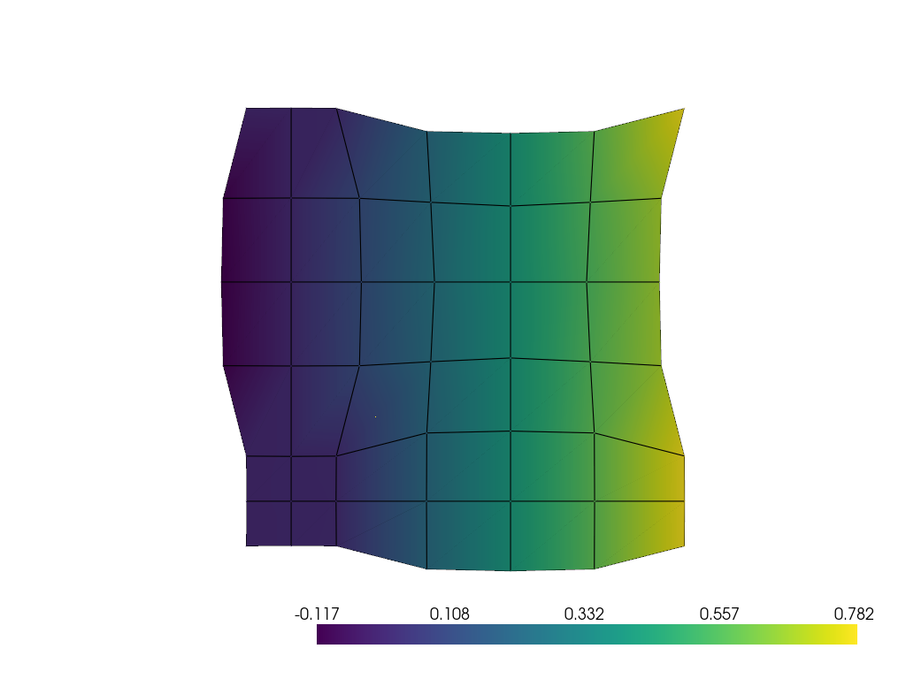
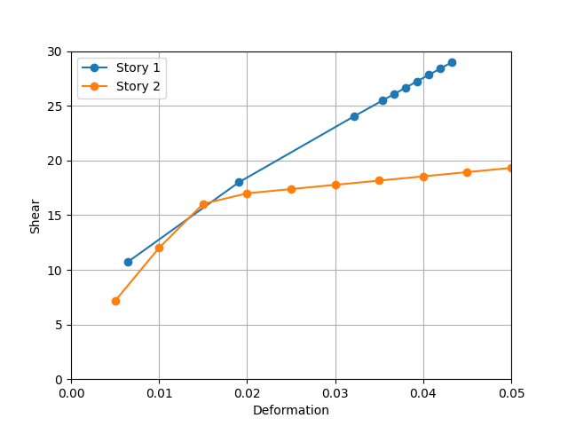
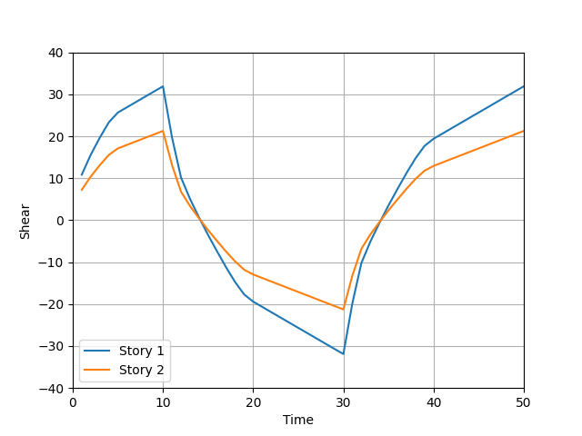

3.1.4.4. Equation Constraint
An equation constraint relates a certain dof at a constrained node to certain dofs at retained nodes by the linear equation of:
cCoef * cDOF(cNode)
+ rCoef1 * rDOF1(rNode1)
+ rCoef2 * rDOF2(rNode2)
+ ...
+ rCoefn * rDOFn(rNoden) = 0
- equationConstraint $cNodeTag $cDOF $cCoef $rNodeTag1 $rDOF1 $rCoef1 $rNodeTag2 $rDOF2 $rCoef2 ... $rNodeTagn $rDOFn $rCoefn
Argument |
Type |
Description |
|---|---|---|
$cNodeTag |
integer |
integer tag identifying the constrained node (cNode) |
$cDOF |
integer |
nodal degrees-of-freedom that is constrained at the cNode |
$cCoef |
float |
coefficient associated with cNode |
$rNodeTag1 |
integer |
integer tag identifying the 1st retained node (rNode1) |
$rDOF1 |
integer |
nodal degrees-of-freedom that is retained at the rNode1 |
$rCoef1 |
float |
coefficient associated with rNode1 |
$rNodeTag2 |
integer |
integer tag identifying the 2nd retained node (rNode2) |
$rDOF2 |
integer |
nodal degrees-of-freedom that is retained at the rNode2 |
$rCoef2 |
float |
coefficient associated with rNode2 |
$rNodeTagn |
integer |
integer tag identifying the nth retained node (rNoden) |
$rDOFn |
integer |
nodal degrees-of-freedom that is retained at the rNoden |
$rCoefn |
float |
coefficient associated with rNoden |
Example 1, Representative Volume Element (RVE) analysis
Periodic constraints are implemented via equationConstraint to model the behavior of a bulk material by simulating only a representative volume. The constraints create a repeating pattern, as if the RVE is a repeating unit cell within a larger, infinite structure. By applying the periodic constraints, the simulation can focus on a smaller, manageable RVE and accurately represent the behavior of the entire material.

import openseespy.opensees as ops
import vfo.vfo as vfo
ops.model('basic', '-ndm', 2, '-ndf', 2)
ops.node(1, 0.0, 0.0)
nrow = 7; ncol = 7
for i in range(1, nrow + 1):
for j in range(1, ncol + 1):
ops.node(i * 10 + j, j, i)
ops.fix(22, 1, 1)
ops.nDMaterial('ElasticIsotropic', 1, 1000.0, 0.0)
ops.nDMaterial('ElasticIsotropic', 2, 10.0, 0.0)
for i in range(1, nrow):
for j in range(1, ncol):
i1 = i + 1; j1 = j + 1
ops.element('quad', i * 10 + j, i * 10 + j, i * 10 + j1, i1 * 10 + j1, i1 * 10 + j, 1.0, 'PlaneStress', 1 if i < 3 and j < 3 else 2)
for i in range(1, nrow):
ops.equationConstraint(i * 10 + ncol, 1, 1.0, i * 10 + 1, 1, -1.0, 1, 1, -1.0)
ops.equationConstraint(i * 10 + ncol, 2, 1.0, i * 10 + 1, 2, -1.0)
ops.equationConstraint(nrow * 10 + ncol, 1, 1.0, nrow * 10 + 1, 1, -1.0, 1, 1, -1.0)
for j in range(1, ncol):
ops.equationConstraint(nrow * 10 + j, 2, 1.0, 10 + j, 2, -1.0, 1, 2, -1.0)
ops.equationConstraint(nrow * 10 + j, 1, 1.0, 10 + j, 1, -1.0)
ops.equationConstraint(nrow * 10 + ncol, 2, 1.0, 10 + ncol, 2, -1.0, 1, 2, -1.0)
vfo.createODB(model="RVE", loadcase="stretch")
ops.timeSeries('Linear', 1)
ops.pattern('Plain', 1, 1)
ops.load(1, 10.0, 10.0)
ops.constraints('Penalty', 1.0e6, 1.0e6)
ops.analysis('Static')
ops.analyze(1); ops.wipe()
vfo.plot_deformedshape(model="RVE", loadcase="stretch", scale=5, contour='x')
Example 2, Control of specific interstory deformation in pushover analysis
A DOF representing the shear deformation of Story 2 is introduced by equationConstraint, which is controlled by the DisplacementControl integrator with a 0.005 increment.

import matplotlib.pyplot as plt
import openseespy.opensees as ops
import numpy as np
ops.model('basic', '-ndm', 2, '-ndf', 3)
ops.node( 1,-1.0, 0.0); ops.fix(1, 0, 1, 1)
ops.node(11, 0.0, 0.0); ops.fix(11, 1, 1, 1)
ops.node(12, 4.0, 0.0); ops.fix(12, 1, 1, 1)
ops.node(21, 0.0, 2.0)
ops.node(22, 4.0, 2.0)
ops.node(31, 0.0, 4.0)
ops.node(32, 4.0, 4.0)
ops.geomTransf('Linear', 1)
ops.uniaxialMaterial('Steel01', 1, 3e2, 2e5, 0.2)
ops.section('WFSection2d', 1, 1, 0.6, 0.05, 0.3, 0.1, 5, 1)
ops.beamIntegration('Lobatto', 1, 1, 5)
ops.uniaxialMaterial('Steel01', 2, 5e2, 2e5, 0.01)
ops.section('WFSection2d', 2, 2, 0.6, 0.05, 0.3, 0.1, 5, 1)
ops.beamIntegration('Lobatto', 2, 2, 5)
ops.element('forceBeamColumn', 11, 11, 21, 1, 1)
ops.element('forceBeamColumn', 12, 12, 22, 1, 1)
ops.element('elasticBeamColumn', 13, 21, 22, 0.1, 2e5, 0.05, 1)
ops.element('forceBeamColumn', 21, 21, 31, 1, 2)
ops.element('forceBeamColumn', 22, 22, 32, 1, 2)
ops.element('elasticBeamColumn', 23, 31, 32, 0.1, 2e5, 0.05, 1)
ops.equationConstraint(31, 1, 1.0, 21, 1, -1.0, 1, 1, -1.0) # link interstory deformation to Node 1
ops.timeSeries('Linear', 1)
ops.pattern('Plain', 1, 1)
ops.load(21, 1.0, 0.0, 0.0)
ops.load(31, 2.0, 0.0, 0.0)
ops.constraints('Penalty', 1.0e6, 1.0e6)
ops.integrator('DisplacementControl', 1, 1, 5e-3) # 0.005 increment in interstory deformation of Story 2
ops.analysis('Static')
ops.recorder('Node', '-file', 'disp.out', '-time', '-node', 21, 31, '-dof', 1, 'disp')
ops.recorder('Element', '-file', 'force1.out', '-time', '-ele', 11, 12, 'force')
ops.recorder('Element', '-file', 'force2.out', '-time', '-ele', 21, 22, 'force')
ops.analyze(10); ops.wipe()
disp = np.loadtxt('disp.out')
force1 = np.loadtxt('force1.out'); force2 = np.loadtxt('force2.out')
plt.figure()
plt.plot(disp[:, 1], force1[:, 4] + force1[:, 10], 'o-', label = "Story 1")
plt.plot(disp[:, 2] - disp[:, 1], force2[:, 4] + force2[:, 10], 'o-', label = "Story 2")
plt.xlim(0, 0.05); plt.ylim(0, 30)
plt.xlabel('Deformation'); plt.ylabel('Shear')
plt.legend(); plt.grid(); plt.show()
Example 3, Cyclic pushover analysis by a non-homogeneous constraint
It is sometimes necessary to impose a non-homogeneous constraint where the RHS is not zero but a prescribed value that may vary with time. The non-homogeneous constraint can easily transform into a homogeneous one by moving the time-varying term from the RHS to the LHS and associating it with a new node and DOF.
The cyclic pushover analysis leverages a non-homogeneous constraint through equationConstraint to apply 1:2 lateral loads to the first and second floors, respectively. The resulting 3:2 story shears are verified in the shear versus time plot.

import matplotlib.pyplot as plt
import openseespy.opensees as ops
import numpy as np
ops.model('basic', '-ndm', 2, '-ndf', 3)
ops.node( 1,-1.0, 0.0); ops.fix(1, 0, 1, 1)
ops.node(11, 0.0, 0.0); ops.fix(11, 1, 1, 1)
ops.node(12, 4.0, 0.0); ops.fix(12, 1, 1, 1)
ops.node(21, 0.0, 2.0)
ops.node(22, 4.0, 2.0)
ops.node(31, 0.0, 4.0)
ops.node(32, 4.0, 4.0)
ops.geomTransf('Linear', 1)
ops.uniaxialMaterial('Steel01', 1, 3e2, 2e5, 0.2)
ops.section('WFSection2d', 1, 1, 0.6, 0.05, 0.3, 0.1, 5, 1)
ops.beamIntegration('Lobatto', 1, 1, 5)
ops.uniaxialMaterial('Steel01', 2, 5e2, 2e5, 0.01)
ops.section('WFSection2d', 2, 2, 0.6, 0.05, 0.3, 0.1, 5, 1)
ops.beamIntegration('Lobatto', 2, 2, 5)
ops.element('forceBeamColumn', 11, 11, 21, 1, 1)
ops.element('forceBeamColumn', 12, 12, 22, 1, 1)
ops.element('elasticBeamColumn', 13, 21, 22, 0.1, 2e5, 0.05, 1)
ops.element('forceBeamColumn', 21, 21, 31, 1, 2)
ops.element('forceBeamColumn', 22, 22, 32, 1, 2)
ops.element('elasticBeamColumn', 23, 31, 32, 0.1, 2e5, 0.05, 1)
ops.equationConstraint(21, 1, 1.0, 31, 1, 2.0, 1, 1, -3.0) # 1.0:2.0 lateral loads on Nodes 21 and 31
ops.timeSeries('Path', 1, '-time', 0, 10, 30, 50, '-values', 0, 10, -10, 10)
ops.pattern('Plain', 1, 1)
ops.sp(1, 1, 0.01)
ops.constraints('Penalty', 1.0e6, 1.0e6)
ops.integrator('LoadControl', 1.0)
ops.analysis('Static')
ops.recorder('Element', '-file', 'force1.out', '-time', '-ele', 11, 12, 'force')
ops.recorder('Element', '-file', 'force2.out', '-time', '-ele', 21, 22, 'force')
ops.analyze(50); ops.wipe()
force1 = np.loadtxt('force1.out'); force2 = np.loadtxt('force2.out')
plt.figure()
plt.plot(force1[:, 0], force1[:, 4] + force1[:, 10], label = "Story 1")
plt.plot(force2[:, 0], force2[:, 4] + force2[:, 10], label = "Story 2")
plt.xlim(0, 50); plt.ylim(-40, 40)
plt.xlabel('Time'); plt.ylabel('Shear')
plt.legend(); plt.grid(); plt.show()
Code developed by: Yuli Huang